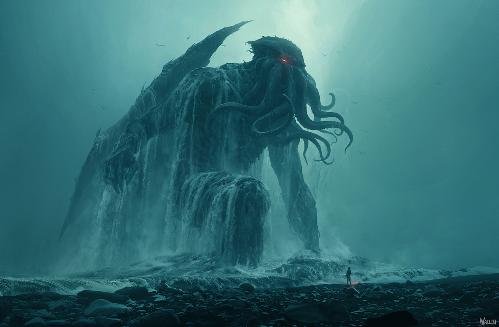

LA LLAMADA DE CTHULHU

Cthulhu es una criatura extraterrestre cuyas características físicas y habilidades hacen de él algo parecido a un dios para los humanos. Sus principales seguidores y sirvientes son la semilla estelar de Cthulhu. En la novela En las montañas de la locura se dice que pequeños retoños de Cthulhu estuvieron en guerra con varias razas en un pasado lejano, en el planeta Tierra. También lo adoran la mayor parte de los Profundos, seres mitad humano mitad batracio, que habitan los océanos. Por encima de los Primigenios están los Dioses Exteriores, aunque el universo de Lovecraft no se presta demasiado a los escalones jerárquicos. Según sus seguidores humanos, Cthulhu es el sumo sacerdote de estos seres